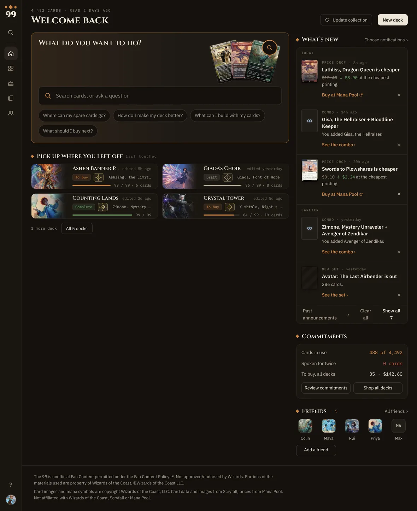
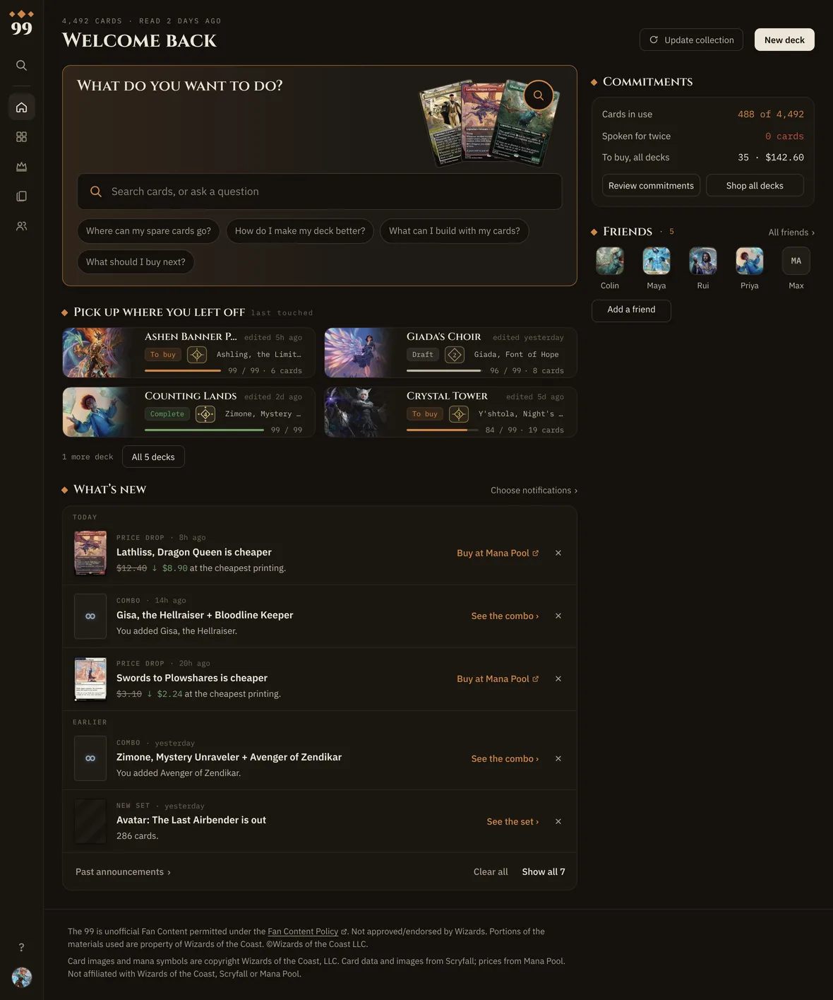
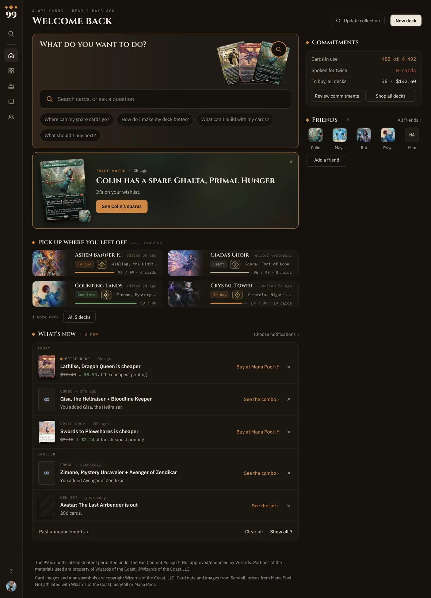
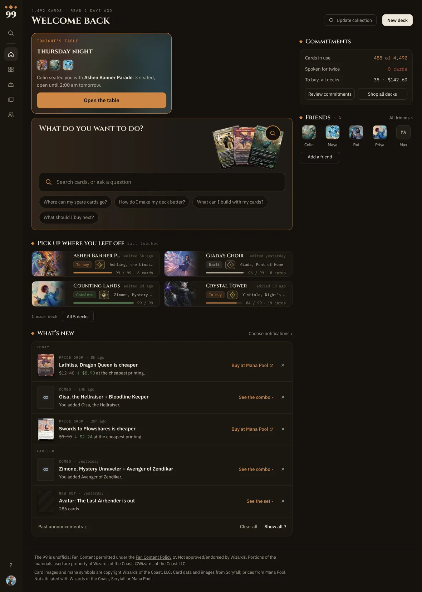
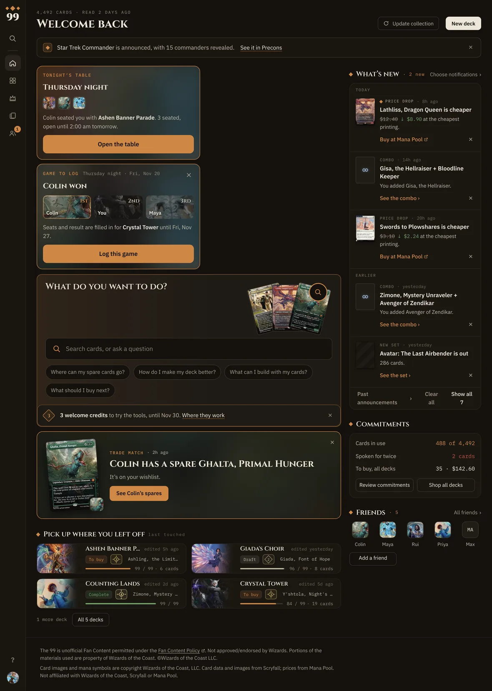

1180 is where Home splits into two columns (an 11 inch iPad held sideways), so this is the narrowest two-column Home and where the gap shows most. Below 1180, portrait included, Home is one column and already carries What's new in the main flow: unchanged.

Shipped
Deck names already truncate at this width; under them, about 550px of nothing beside the rail.

Proposed
What's new under the decks. Its wide rows fit the 620px column with room to spare: titles stay on one line, where the rail wrapped them to two.

Lead only · main column
Search, the lead, decks, then the rest of the news.

Table only · main column
The table card keeps its shipped 392px cap below 1280 (see Main, Also seen).

Busy day · unchanged
What's new tops the rail, as shipped.